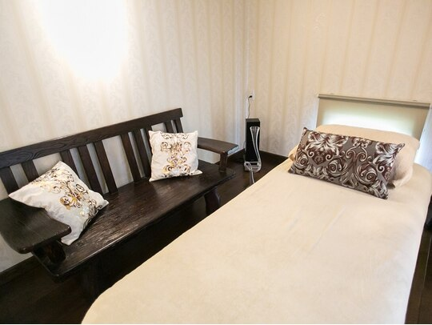
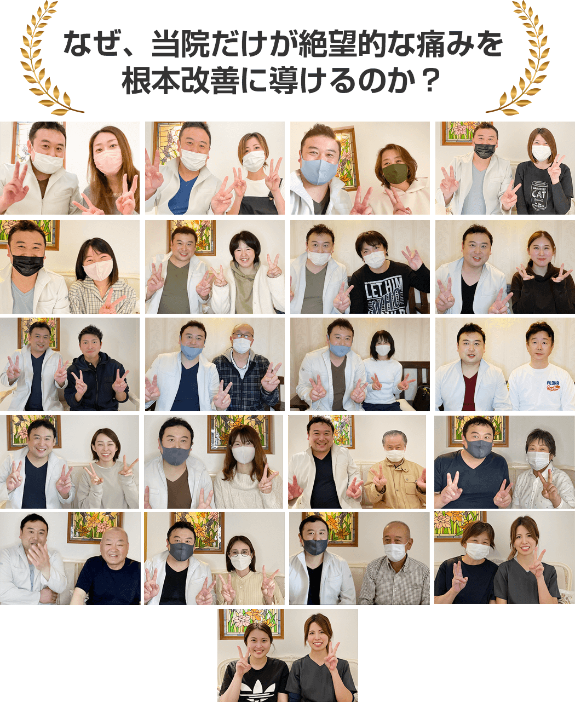

那須塩原市・大田原市・那須町周辺で、病院や整骨院、マッサージを３件以上回っても改善しなかったあなたへ
その刺すような腰痛…
足まで痺れる坐骨神経痛…
「もう一生このまま」と諦めていませんか？
痛み止めを飲み続ける生活はもう終わり。
女性特有の繊細な体に合わせた、
バキバキしない「深層筋膜リリース」で
腰痛を根本から改善します。
今すぐ腰痛を改善したいあなたへ
通常初回施術費 12,000円が
※ご予約多数のため、1日2名様限定
なぜ初回の施術費は1,980円（税込）なのか？
それはあなたに同じ過ちを繰り返して欲しくないからです。
改善結果のないその場しのぎの施術やマッサージにあなたの大切な時間とお金を無駄にしてほしくないのです。
私は誰よりもあなたと向き合います。あなたのお悩みを私に聞かせてください。
あなたの腰痛・坐骨神経痛を改善するために全力で施術いたします。 本気で腰痛を改善したい方は今すぐお電話ください。
【完全予約制】施術のご予約は今すぐお電話
電話で予約・相談する080-6442-1591
【受付時間】9時〜21時 【定休日】不定休
※施術中は電話に出られませんので留守番電話にお名前と電話番号を伝言下さい。すぐに折り返し致します。
LINEで簡単に当院の施術予約が可能です。
ご質問や体のお悩み相談もお気軽にご連絡ください。
もし、あなたが1つでも当てはまるなら…
当院がお力になれます
- 朝起き上がる時、腰が痛くて体を起こすのに時間がかかる
- 長時間座っていると腰が痛くなり、仕事に集中できない
- お尻から足にかけてしびれや痛みが走る（坐骨神経痛）
- 前かがみや重いものを持つと腰に激痛が走る
- 病院でレントゲンを撮っても「異常なし」と言われた
- 整骨院やマッサージに通っても、翌日には元通りになってしまう
- 「椎間板ヘルニア」「脊柱管狭窄症」だから仕方ないと諦めている
- 腰の痛みで趣味やスポーツを諦めてしまっている
- 痛みでイライラしてしまい、家族に当たってしまう
- いつまた「ぎっくり腰」になるかが怖くて、動けない
その悩み、私に全てお任せください。
当院は、そのような重い腰痛を
根本改善する専門院です。
痛いところをマッサージしても
腰痛の原因は治りません
腰痛の本当の原因は
骨盤・背骨・筋膜のバランスの崩れ
「腰痛の本当の原因は、腰の筋肉が固くなることだけではありません。骨盤や背骨のゆがみによって腰周辺の筋肉が慢性的に緊張し、血流が悪くなり疲労物質が蓄積します。さらにその筋肉が周囲の血管・神経を圧迫して痛みが強まる悪循環に陥ってしまうのです。痛い場所だけをもみほぐしても、根本の原因が残る限り腰痛は繰り返します。」
なぜ、当院の施術を受けると
腰痛・坐骨神経痛が根本改善するのか？
～他店とは違う5つの理由～
1 NHK等のメディアでも話題の「筋膜リリース」を用いた独自技術

あなたは「腰が痛いから腰を揉む」「お尻が張るからお尻を押す」そんな施術を受けてきませんでしたか？
実は、腰痛の原因の8割は「痛みが出ている場所にはない」のです。
当院では、筋肉を包んでいる「筋膜」のつながりを利用し、痛みの本当の原因である「筋膜の癒着」を探し出します。
例えば、あなたの腰痛の原因は、実は「足首の使いすぎ」や「骨盤の歪み」にあるかもしれません。
この本当の原因を見つけ出し、アプローチするからこそ、その場しのぎではない根本改善が可能になるのです。
2 バキバキしない・痛くない、安心のソフトな施術

整体と聞くと「ボキボキされるのが怖い」「痛いのは嫌だ」というイメージをお持ちかもしれません。
しかし、強い力で揉んだり、急に捻ったりすることは、防御反応で筋肉を余計に硬くしてしまい、逆効果です。
当院の「ヒカリ式筋膜リリース」は、豆腐が崩れないほどの優しいタッチが特徴です。
眠ってしまうほど心地よい刺激なのに、深層の筋肉までしっかり緩んでいく感覚をぜひ体感してください。
腰痛が重く痛みに敏感な方や、高齢の方でも安心して受けていただけます。
3 徹底したカウンセリングと検査で「あなたの腰痛の原因」を特定します

病院へ行って、顔も見ずにパソコンに向かって話をされ、すぐ痛み止めを出された経験はありませんか？
当院では、施術前のカウンセリングと検査に30分以上の時間をかけます。
「いつから痛いのか？」「どんな動作で痛むのか？」「過去に怪我は？」など、徹底的にヒアリングを行い、体全身のバランスを検査します。
原因がわからずに施術をすることは、地図を持たずに航海に出るようなものです。
私たちはあなた以上にあなたの体を理解し、納得のいく説明をしてから施術に入ります。
4 再発を防ぐための「完全オーダーメイド」セルフケア指導

施術で良くなるのは当たり前です。大切なのは「家に帰ってから、その良い状態をキープできるか」です。
当院では、あなたの今の体の状態に合わせた、簡単なストレッチや体操を指導させていただきます。
YouTubeで見るような一般的な体操ではなく、「今のあなたに必要な」セルフケアをお伝えします。
これを覚えることで、あなたは「自分で自分の腰を守れる」ようになり、整体院通いから卒業することができるのです。
5
完全予約制・個室対応
あなただけのプライベート空間

「隣のベッドの話し声が気になる」「先生がコロコロ変わる」といったことはありません。
当院は完全予約制で、他の患者様と顔を合わせることはほとんどありません。
また、毎回院長である私が責任を持って施術を担当します。
清潔感のある落ち着いた空間で、腰の痛みを気にせず心身ともにリラックスして施術を受けていただけます。
腰痛改善の喜びの声が続々と届いています

「初回で8割良くなって、普通に歩けるようになりました！」
矢板市在住 齋藤様 (40代 女性)
来院前のお悩み：
腰だけでなくお尻と太腿の裏にも痛みがあり、歩くのが辛く、座っていても痛い状態でした。産後に悪化し、病院でレントゲンを撮ったら「椎間板ヘルニア気味」と言われました。鍼・接骨院・整体・マッサージと色々試しましたが、良くなったり悪くなったりの繰り返しで痛みがゼロになることはありませんでした。
施術後の変化：
初回の施術でカウンセリングをしっかりしていただいて、そのまま施術してもらったら本当に8割くらい良くなって、痛みも無くなって普通に歩けるようになってびっくりしました。今は定期的にメンテナンスで通っており、痛みなく過ごせています。
「這ってトイレに行っていたのが、スッと立てるように！」
宇都宮市在住 W様 (60代 女性)
来院前のお悩み：
坐骨神経痛でトイレにも行けないほどの痛み。歩くのもやっとで、もうこの状態で生きていてもしょうがないと感じるほどでした。整体に行って治療していましたが、一向に良くならなかったです。
施術後の変化：
2回目から夜の痛みが少し和らぎ、3回目には這ってトイレに行っていたのがスッと立っていけるようになりました。3ヶ月でこんなに良くなるとは信じられないくらいです。ちょっとしたハイキングも行けそうなくらい元気になりました。
「手術と注射しかないと言われた腰が、8〜9割改善！」
日光市在住 福田様 (60代 男性)
来院前のお悩み：
ほとんど歩けない状態で、夜も常に痛みで起きてしまい、朝は足が攣って激痛でした。病院でブロック注射や痛み止めを試しましたが改善しませんでした。
施術後の変化：
何回か施術を受けているうちに、だんだん良くなるのが分かりました。今は8〜9割くらい良くなっています。夜もぐっすり眠れるようになり、朝の足のつりもなくなりました。肩の痛みまで取れて本当に感謝しています。
「病院で異常なしと言われ諦めていた腰痛が改善！」
高根沢町在住 高橋様 (30代 男性)
来院前のお悩み：
学生時代に腰を痛めてから慢性的な腰痛が続き、力仕事で悪化。整形外科でレントゲンを撮っても「異常なし」と言われ、治らないものと諦めていました。
施術後の変化：
ここに来て、自分の身体の状態がよく理解できました。今は腰の痛みが大分良くなっています！以前は何かするたびに痛かったのが、今は無理な体勢をしない限り痛まなくなりました。仕事も生活も本当に楽になっています。
「神奈川から2時間以上かけて通う理由がわかります」
横浜市在住 新沢様 (60代 男性)
来院前のお悩み：
30年前からぎっくり腰を繰り返し、腰痛で3回入院したこともあります。整体・カイロ・鍼灸と色々通いましたが根本的には改善しませんでした。
施術後の変化：
佐藤先生のやり方が自分に合っていて、月1回ですが回数を重ねるたびに良くなっています。施術後にゴルフをしたら回復が非常に良く、腰やお尻の不安がかなり改善されました。カイロや鍼灸とは全く別の角度からのアプローチで、腰痛の方にぜひ試してほしいです。
「仕事で痛めていた腰が8割軽減！毎回良くなっていくのがわかります」
大田原市在住 屋代様 (40代 男性)
来院前のお悩み：
仕事で屈む姿勢が多く、腰が痛くて辛い状態でした。自分でストレッチしてみましたがあまり効果はありませんでした。
施術後の変化：
施術を受けて、痛みがどんどん減ってきています。今は8割くらい軽減されてきていて、大分楽です！気になっている方はぜひ受けてみてください。大分変わると思います。
「慢性腰痛が治り、上がらなかった腕まで上がるように！」
那須町在住 高久様 (70代 男性)
来院前のお悩み：
腰痛が慢性化していて、病院やマッサージに行っても改善が全然みられませんでした。肩もある高さまでしか上がらず、痛みがありました。
施術後の変化：
腰は普通に歩けるようになり、仕事も普通にできるようになって痛みがかなり改善されました。上がらなかった肩まで今は上がるようになっています。2〜3回通うことでかなり変わりますので、ぜひいらしてください。
「整体も鍼もダメだったのに…ここは「アタリ！」でした」
那須塩原市在住 片村様 (50代 女性)
来院前のお悩み：
朝起きたら腰が動かせないほど痛く、運転しても激しい痛みが続く状態でした。整体・鍼など色々試しましたが全部ダメで、半ば諦めていました。
施術後の変化：
普通に生活ができるようになりました。6〜7割良くなっています。「騙されたと思って来てみたら当たりでした！」まだ諦めていない方は、ぜひ一度来てみてください。きっと変わります。

今すぐ腰痛を改善したいあなたへ
通常初回施術費 12,000円が
※ご予約多数のため、1日2名様限定
なぜ初回の施術費は1,980円（税込）なのか？
それはあなたに同じ過ちを繰り返して欲しくないからです。
改善結果のないその場しのぎの施術やマッサージにあなたの大切な時間とお金を無駄にしてほしくないのです。
私は誰よりもあなたと向き合います。あなたのお悩みを私に聞かせてください。
あなたの腰痛・坐骨神経痛を改善するために全力で施術いたします。 本気で腰痛を改善したい方は今すぐお電話ください。
【完全予約制】施術のご予約は今すぐお電話
電話で予約・相談する080-6442-1591
【受付時間】9時〜21時 【定休日】不定休
※施術中は電話に出られませんので留守番電話にお名前と電話番号を伝言下さい。すぐに折り返し致します。
LINEで簡単に当院の施術予約が可能です。
ご質問や体のお悩み相談もお気軽にご連絡ください。
初回施術費の全額返金保証付き
GUARANTEE
当院の施術で症状が改善されなかった方には
初回施術費を全額返金致します。
あなたにリスクはありません。
ここまで聞いてまだ不安なあなたへ、
初回の施術で改善結果を実感できなければ施術費を全額返金します。
今、那須塩原市・大田原市・那須町には多くの整体院や整骨院、マッサージ屋さんがあり自分はどこに行けば腰痛が改善するのかわからない状態にあると思います。
とりあえず行ってみた結果、「ここは少し違ったな・・・」と思う方も少なくないと思います。
そこで私の施術を受けて頂いて1mmでも変化がない、改善結果が感じられないと思った場合は初回施術終了後にお申し付け下さい。初回施術料を返金させていただきます。
私は、施術に改善結果を感じていただけなかった方からは施術費を頂きません。 「ここでなら腰痛が改善できる！」と思って頂けた時に料金をお支払いください。
【ご予約に関する注意事項】
-
◆
キャンセル・時間変更について：
ご予約のキャンセルや変更は、前日の24時間前までにご連絡をお願いいたします。当日キャンセルの場合は、施術代の100%を頂戴する場合がございます。 -
◆
ご来院時間について：
初回はカウンセリング票の記入がございますので、予約時間の5分前にお越しください。 -
◆
服装について：
動きやすい服装（パンツスタイル）でお越しください。スカートや硬いデニム、厚手のセーターはお控えいただけますと幸いです。 -
◆
施術の制限について：
妊娠中の方、または重度の疾患をお持ちの方は、事前にお医者様にご相談の上、ご予約ください。
施術の流れ
1. 問診表の記入・カウンセリング
まず、あなたの腰痛・お悩みや痛みの状態について詳しくお伺いします。いつから・どんな時・どんな動きで痛むかなど、どんな些細なことでもお話しください。
2. 身体の検査
腰痛の原因がどこにあるのか、関節の動きや筋膜の硬さ、骨盤・背骨のバランスをチェックして特定します。
3. 施術
バキバキしない、非常にソフトな筋膜リリースで体のバランスを整え、腰痛を根本から改善へと導きます。
4. 施術後の確認・アドバイス
施術前後の変化を確認し、日常生活で気をつける点や、腰痛が再発しないためのセルフケア方法をお伝えします。
よくあるご質問
Q. 腰が痛くて動きにくいのですが、施術は大丈夫ですか？
A. はい、ご安心ください。当院の施術は非常にソフトで、強い力で押したりボキボキしたりすることは一切ありません。急性のぎっくり腰の方や、重度の腰痛の方でもお受けいただけますので、まずはお気軽にご相談ください。
Q. 椎間板ヘルニアや脊柱管狭窄症でも改善できますか？
A. はい、対応しております。手術を勧められた方でも改善されたお客様が多数いらっしゃいます。まず一度ご相談ください。※重篤な症状の場合は医療機関との連携を勧める場合があります。
Q. 何回くらい通えば腰痛は改善しますか？
A. 個人差がありますが、初回から変化を感じる方が多くいらっしゃいます。根本改善を目指すには、症状の重さにもよりますが平均5〜10回程度のコースをご提案しています。
Q. 予約は必要ですか？
A. はい、当院は「完全予約制」となっております。事前にLINEまたはお電話でご予約をお願いいたします。
Q. 健康保険は使えますか？
A. 申し訳ございません。当院では質の高い施術を提供し、根本改善を目指すために「自費診療」のみとさせていただいております。
院長挨拶

佐藤光彦があなたの腰痛を根本から改善します
私は栃木県那須塩原市で生まれ、4歳から父の仕事の関係で東京都狛江市、アメリカのカリフォルニア州で小学6年生まで過ごしました。
地元に戻ってバスケットボールや趣味のゴルフの練習中に腰を痛めたことがありました。その経験がきっかけとなり、23歳でこの業界に入り、現場での5年間で店長を経験。その後エリアマネージャーとして人の教育や店舗運営に長く携わっておりました。
仕事自体は充実しておりましたが、もっと多くのお客様の腰痛を根本から改善したい！という想いが強くなり、独立を決意しました。
苦渋の決断ですが、より自分の理想の形を作りたいと会社を辞めて自分で開業することにしました。
整体の勉強に熱が入り、腰痛の根本原因へのアプローチと、再発させないための正しい体の使い方の指導を徹底。腰痛が改善したあとに「また好きなことができる！」と喜んでいただけることが、私の最大の喜びです。

今までどこに行っても腰痛が良くならなかったあなたへ
もう、無駄な遠回りはやめてください。
私があなたの腰痛改善の最後の砦になります。
腰痛根本改善コース（全身整体）
通常初回 12,000円(税込)のところ
1,980円
※1日2名様限定
なぜ、初回をこの価格にするのか？
それは、あなたに「もう同じ過ちを繰り返してほしくない」からです。
効果のない施術にお金と時間を費やすのは、もう終わりにしましょう。
本気で腰痛を治したいあなたのために、私は最初のハードルを極限まで下げました。
通常初回施術費 12,000円が
※ご予約多数のため、1日2名様限定
【完全予約制】施術のご予約は今すぐお電話
080-6442-1591【受付時間】9時〜21時 【定休日】不定休
※施術中は電話に出られませんので留守番電話にお名前と電話番号を伝言下さい。すぐに折り返し致します。
LINEで簡単に当院の施術予約が可能です。
ご質問や体のお悩み相談もお気軽にご連絡ください。